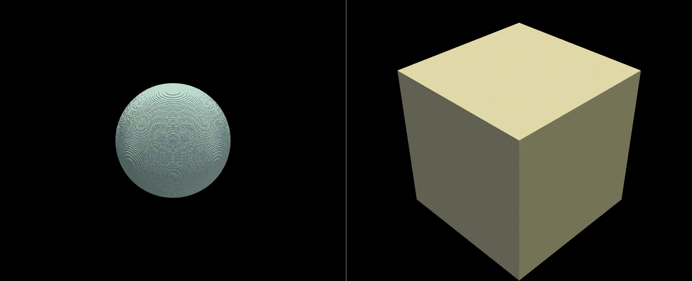

spherical pore
@author: Alexandre Sac–Morane alexandre.sac-morane@enpc.fr
This is the file to generate a microstructure with a spherical pore.
Expand source code
#-------------------------------------------------------------------------------
# Librairies
#-------------------------------------------------------------------------------
import skfmm, pickle
import numpy as np
import matplotlib.pyplot as plt
#-------------------------------------------------------------------------------
# Functions
#-------------------------------------------------------------------------------
from fast_marching_tortuosity import compute_tortuosity_fast_marching
from numpy_to_vtk import write_vtk_structured_points
from compute_minkowski import compute_minkowski
#-------------------------------------------------------------------------------
# User
#-------------------------------------------------------------------------------
dim_sample = 250 # -
porosity = 0.2 # -
dim_interface = 4 # -
sample_id = '00'
#-------------------------------------------------------------------------------
# Generate the binary microstructure
#-------------------------------------------------------------------------------
# generate the solid (1)
M_bin = np.ones((dim_sample, dim_sample, dim_sample))
# determine the size to verify the porosity
volume_pore = porosity * dim_sample**3
dim_pore = (volume_pore / (4/3 * np.pi))**(1/3) # radius
# generate the pore (0)
for i_x in range(dim_sample):
for i_y in range(dim_sample):
for i_z in range(dim_sample):
if (i_x - dim_sample/2)**2 + (i_y - dim_sample/2)**2 + (i_z - dim_sample/2)**2 < dim_pore**2:
M_bin[i_x, i_y, i_z] = 0
#-------------------------------------------------------------------------------
# Compute the sdf
#-------------------------------------------------------------------------------
M_sd = skfmm.distance(M_bin-0.5, dx = np.array([1, 1, 1]))
#-------------------------------------------------------------------------------
# Compute the microstructure
#-------------------------------------------------------------------------------
Microstructure = np.zeros((dim_sample, dim_sample, dim_sample))
for i_x in range(dim_sample):
for i_y in range(dim_sample):
for i_z in range(dim_sample):
if M_sd[i_x, i_y, i_z] > dim_interface/2: # inside the grain
Microstructure[i_x, i_y, i_z] = 1
elif M_sd[i_x, i_y, i_z] < -dim_interface/2: # outside the grain
Microstructure[i_x, i_y, i_z] = 0
else : # in the interface
Microstructure[i_x, i_y, i_z] = 0.5 + M_sd[i_x, i_y, i_z]/dim_interface
#-------------------------------------------------------------------------------
# Output
#-------------------------------------------------------------------------------
# plot
#fig, ((ax1, ax2), (ax3, ax4)) = plt.subplots(2,2, figsize=(16,9),num=1)
#ax1.imshow(Microstructure[int(dim_sample//2), :, :], cmap='Greys', vmin=0, vmax=1)
#ax1.set_xlabel('Z axis')
#ax1.set_ylabel('Y axis')
#ax2.imshow(Microstructure[:, int(dim_sample//2), :], cmap='Greys', vmin=0, vmax=1)
#ax2.set_xlabel('Z axis')
#ax2.set_ylabel('X axis')
#ax3.imshow(Microstructure[:, :, int(dim_sample//2)], cmap='Greys', vmin=0, vmax=1)
#ax3.set_xlabel('Y axis')
#ax3.set_ylabel('X axis')
#plt.savefig('plot_microstructure.png')
#plt.close()
# save
dict_fft = {'M_microstructure': Microstructure}
with open('fft/sph_pore_dict_fft_' + sample_id, 'wb') as handle:
pickle.dump(dict_fft, handle, protocol=pickle.HIGHEST_PROTOCOL)
# vtk file
# change the array structure to verify the function
Microstructure_vtk = np.transpose(Microstructure, (2, 1, 0))
write_vtk_structured_points('vtk/sph_pore_' + sample_id + '.vtk', Microstructure_vtk, spacing=(1.0, 1.0, 1.0), origin=(0, 0, 0), binary=False)
#-------------------------------------------------------------------------------
# Minkowski functionals
#-------------------------------------------------------------------------------
print("Computing the Minkowski functionals")
M0, M1, M2, M3 = compute_minkowski(M_bin)
print(f'M0 (porosity) = {M0:.3f}, M1 (specific surface area) = {M1:.3e}, M2 (mean grain size) = {M2:.3e}, M3 (Euler characteristic) = {M3:.3e} \n')
#-------------------------------------------------------------------------------
# fmm
#-------------------------------------------------------------------------------
print("Computing tortuosity on x for solid")
tau_x = compute_tortuosity_fast_marching(M_bin, extraction=[0, dim_sample, 0, dim_sample], dx=1.0, neighborhood=6)
print("Computing tortuosity on y for solid")
tau_y = compute_tortuosity_fast_marching(np.transpose(M_bin, (1, 2, 0)), extraction=[0, dim_sample, 0, dim_sample], dx=1.0, neighborhood=6)
print("Computing tortuosity on z for solid")
tau_z = compute_tortuosity_fast_marching(np.transpose(M_bin, (2, 0, 1)), extraction=[0, dim_sample, 0, dim_sample], dx=1.0, neighborhood=6)
print(f"tau_x={tau_x:.3f}, tau_y={tau_y:.3f}, tau_z={tau_z:.3f}\n")